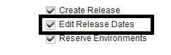

This article was originaly published in 2018.12.11
6.2.2.5 - December, 2018
This release of IBM UrbanCode Release is a maintenance release and includes various bug fixes and enhancements. This release is recommended for all customers.
New features
Hover help available for initiatives imported from RTC
Hovering over a work item imported from RTC displays in a preview window some details of the work item.
Task Dependency graph for deployment plans
You can now view a Dependency Graph of a deployment plan. This complements the Scheduled Deployment Dependency graphs that were already available in an earlier release.

Improved auditing for scheduled deployments
The Change History tab of a scheduled deployment now list more events during the execution of a deployment.
Allow editing of failed task
Failed task description can be edited allowing you to update instructions that would need to be synced with the deployment plan for future deployments.
Allow manual versions to be created from the Application and Versions tabs of a scheduled deployment
Manual versions that can be used for manually created applications can be created directly create from the Scheduled Deployment page.

Task owners can be changed while the task is executing
If multiple users work (for example, a shift change occurs while the task is executing) are working on the same task that is in progress, they can assign the task to each other while the task is in progress. Switching users is audited.
Permission to lock and unlock deployments
Permissions have been added locking and unlocking deployments. There is one permission to lock and another one to unlock a deployment.

Permission to edit release dates
New permission available to allow you to edit release dates.

New notification rules
Additional notification rules are now available. For example: Task Re-Opened or when Comments are added to Tasks.
Performance and usability improvements
-
Search functionality in “Copy From” field in “Create New Deployment Plan” dialog
-
Performance improved on the Environment Reservation dialog
Beta features
The following features have been added as a Beta feature. These features require the enabling of a feature flag to use.
Ability to archive started scheduled deployments using the Rest API
In previous versions, only scheduled deployment not started can be removed from the user interface. This beta feature provides a rest endpoint so that in progress or completed deployments can be be cleaned up.
Reset Approval On Version Change
If a scheduled deployment has been approved and later versions selected changed then the approval will be reset and a new approval will be required for the deployment to start
Ability to act on a task from an email
It is now possible to start and complete tasks from emails. Buttons for each action can be added to the email notification templates. It simplifies the user experience and facilitate on-boarding

</h3">
Release Summary
-
Task Dependency graph for deployment plans
-
Performance Improvements
-
Bug Fixes
Release Notes
Fixes in this Release
-
Ensure Environment reservation dialog is not case sensitive for DB2
-
Remove options for users to create old built in integrations
-
Fixed dependency count on task row to keep value after opening task dialog
-
Fixed issue with editing maintenance settings
-
Ensure segments deleted from a deployment plan also clean up references to its tasks
-
Improved performance of removing a scheduled deployment from an enterprise deployment
-
Fixed issues around estimated end time of a segment
-
Fixed countdown for wait for time tasks
-
Ensure wait for time tasks do not start after a deployment is aborted
-
Ensure notification tasks show assigned user
-
Ensure utf-8 is used for plugin integrations to support special characters
-
Stop plug-ins from creating world writable files
-
Fixed issues with countdown widget
-
Recalculate milestone dates when editing a release’s date
Getting Started
Plan & Prepare
For supported platforms and requirements, see the reports that can be dynamically generated using the
Software Product Compatibility Reports (SPCR)
tool.
Note:
Some supported plug-ins have system requirements that vary from the core product. Information on system requirements for individual plug-ins is available on the download page for that plug-in.
To get started quickly to try the software, IBM UrbanCode Release is shipped with an Apache Derby database. Apache Derby deployments are not supported for production environments. As you plan your production topology, review the
installation guide
.
Learn
To learn more about IBM UrbanCode Release, see the
documentation
.
For help installing or using IBM UrbanCode Release, contact
support
.
To suggest an enhancement to the product, visit the
RFE Community
.
Get support
For information from support, including FAQs, visit the
IBM Support portal.
You can configure the support portal to view information about specific products.
{kind=link}